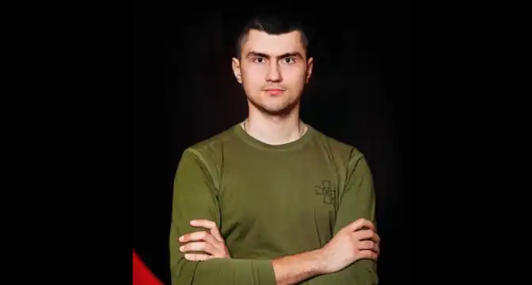
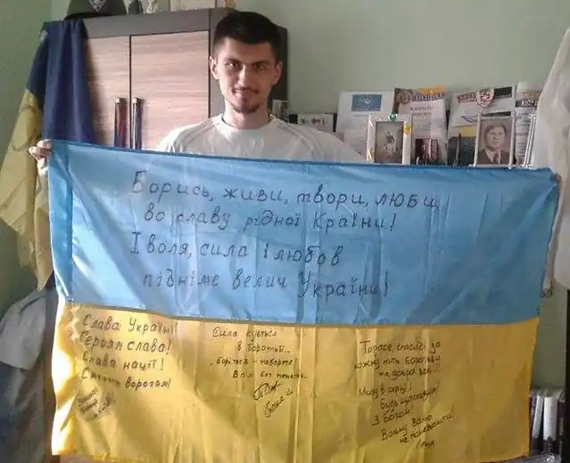
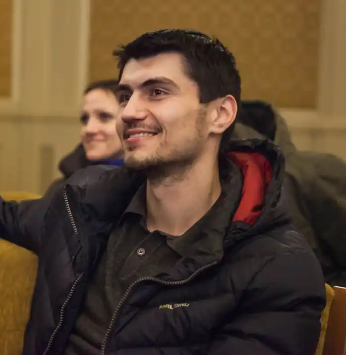

18 лютого 1989 року у селі В'язівне Любешівського (нині – Камінь-Каширького) району Волинської області народився Тарас Матвіїв, молодший лейтенант 24-ї окремої механізованої бригади імені Короля Данила, командир взводу, учасник російсько-української війни, удостоєний звання Герой України та нагороджений орденом "Золота зірка" (посмертно).
Із дитячих років Тарас жив і навчався у місті Жидачів на Львівщині, куди переїхали його батьки. У 2006 році закінчив Жидачівську середню школу № 1. Вищу освіту здобув у 2011 році, закінчивши факультет журналістики Львівського національного університету імені Івана Франка. Працював кореспондентом ТРК "Ера", потім – телеканалу TVІ. Вів блоги у низці видань, зокрема, "Дивись.Інфо", "LB.ua", "Львівська мануфактура новин".
Із 22 листопада 2013 року Тарас Матвіїв був учасником Революції Гідності. Мав псевдо "Сармат". Входив до складу 3-ої сотні Самооборони Майдану. Був співкоординатором "Пошукової ініціативи" (організації, що розшукувала людей, зниклих під час Революції Гідності), членом громадської організації "Українська галицька асамблея", засновником громадської організації "Народний легіон". На Майдані отримав запалення легень. У 2014 році, після початку антитерористичної операції на сході України, Тарас Матвіїв добровольцем вирушив на захист суверенітету та територіальної цілісності України. Воював під селищем Піски Ясинуватського району Донецької області у складі Окремої добровольчої чоти "Карпатська Січ". Батьки про те, що син воював, дізналися лише через півтора року. Він беріг їхні нерви, повідомляючи, що їздить у журналістські відрядження. У 2015 році Тарас Матвіїв став депутатом Жидачівської районної ради VII скликання від Української Галицької партії. Займався волонтерською діяльністю, громадською роботою, патріотичним вихованням молоді, боровся з вирубкою лісів. Був організатором військово-патріотичних вишколів "Лицар Удеча" та Удеч-фесту "Івана Купала". У вересні 2018 року вступив на річні курси лідерства Національної академії сухопутних військ імені гетьмана Петра Сагайдачного. "Він розумів, що офіцеру під силу більше, аніж простому рядовому, – розповіла мама. – І він знайшов себе у війську. Це відчувалось у всьому: сяяли очі, військова виправка, гордість, з якою він носив військову форму, виваженість і навіть з'явився якийсь дивний спокій, якого ми вже давно за ним не спостерігали… Тарас радував нас. І водночас ми розуміли, що ротація на Схід неминуча, зрештою, він цього і не приховував". У грудні 2019 року Тараса Матвіїва скерували для проходження подальшої служби на посаду командира взводу 24-ї окремої механізованої бригади імені Короля Данила оперативного командування "Захід" Сухопутних військ Збройних Сил України, яка дислокується у місті Яворів Львівської області, військова частина А0998. В останню ротацію на схід Тарас поїхав на початку квітня 2020 року. Його взвод тримав оборону на опорному пункті передової лінії оборони на Луганському напрямку. Тут він загинув 10 липня 2020 року біля села Троїцьке Попаснянського району, рятуючи своїх бійців. Книги: "Мої думки. Ритмопроза" (2022) "Мої думки. Проза" (2023).